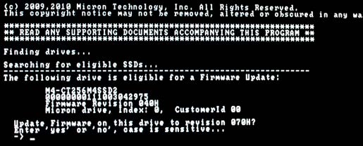
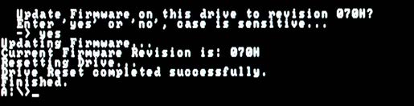

Grundlagen
Dieser Artikel wurde für die folgenden Ubuntu-Versionen getestet:
Ubuntu 16.04 Xenial Xerus
Ubuntu 14.04 Trusty Tahr
Zum Verständnis dieses Artikels sind folgende Seiten hilfreich:
Hinweis:
Dieser Artikel ist Teil der Artikelserie SSD, welche das Thema Solid State Drives behandelt.
Dieser Artikel geht in allen Beschreibungen davon aus, dass die SSD als /dev/sda im System eingebunden ist. Die Befehle müssen bei davon abweichenden Systemen daher gegebenenfalls angepasst werden.
 Dieser Artikel behandelt die Grundlagen, die für den Betrieb einer SSD erfüllt sein müssen. Dazu gehören einerseits die Einstellungen im BIOS, aber auch Aktualisierungen der Firmware.
Dieser Artikel behandelt die Grundlagen, die für den Betrieb einer SSD erfüllt sein müssen. Dazu gehören einerseits die Einstellungen im BIOS, aber auch Aktualisierungen der Firmware.
SSD/Solid State Drive¶
Ein Solid-State-Drive, kurz SSD, ist ein Speichermedium, das wie eine herkömmliche magnetische Festplatte eingebaut und angesprochen werden kann, ohne jedoch eine rotierende Scheibe oder andere bewegliche Teile zu enthalten, da nur Halbleiterspeicher-Bausteine verwendet werden.
Vorteile einer SSD sind mechanische Robustheit, sehr kurze Zugriffszeiten und das Fehlen jeglicher Geräuschentwicklung.
Der Hauptnachteil ist zurzeit noch ein erheblich höherer Preis im Vergleich zu konventionellen Festplatten gleicher Kapazität. Weitere Nachteile sind, sofern man das so nennen möchte, eine etwas andere Herangehensweise an die Inbetriebnahme und die Handhabung solcher Festplatten.
Der Stromverbrauch einer SSD kann, muss aber nicht niedriger sein als der Verbrauch sparsamer Festplatten. Hier sollte man, wenn der Verbrauch ein wichtiges Argument ist, im Zweifelsfall auf Testergebnisse seriöser Webseiten oder Magazine (beispielsweise c't) zurückgreifen um den tatsächlichen Verbrauch in Erfahrung zu bringen.
SSD unter Linux¶
SSD werden unter Linux sehr gut unterstützt. Je neuer der Kernel, desto besser ist die Unterstützung. Ab Kernel 2.6.33, also ab Ubuntu 10.10 Maverick Meerkat, unterstützt dieser auch den TRIM-Befehl (siehe SSD/TRIM).
Möchte man dennoch die Geschwindigkeit einer SSD, die deutlich höher als die einer konventionellen magnetischen Festplatte (HDD) ist, voll ausnutzen, gibt es einiges zu beachten. Durch einige kleinere Maßnahmen, die man am System vornimmt, erreicht man die volle Geschwindigkeit und damit eine hohe Performance der SSD.
Inbetriebnahme¶
Eine SSD ist nicht anders in Betrieb zu nehmen als eine HDD – zumindest was den Einbau ins System anbelangt. Vorsicht ist hingegen geboten, wenn es ans Thema „Übernahme eines vorhandenen Systems“ geht.
In jedem Falle sollte man auf eine Spiegelung mittels dd verzichten, denn durch das „Bit-genaue“ Kopieren des Quell-Laufwerkes (HDD) wird der Ziel-Datenträger (SSD) Bit-für-Bit bzw. Byte-für-Byte ausgelesen und beschrieben – unabhängig von dessen Inhalt und Belegung.
Man füllt also auch unbenutzte und leere Sektoren/Blöcke mit Nullen, so dass keine für die SSD essenzielle Spare-Area mehr frei bleibt. Auch das für die Geschwindigkeit der SSD so wichtige Alignment wird damit ad absurdum geführt. Des Weiteren wird die Anzahl der (endlichen) Schreibvorgänge massiv „verbraucht“. Siehe dazu Intels „Product Specification Addendum“ unter Links.
Stattdessen kann man die folgenden Möglichkeiten zur „Übernahme eines vorhandenen Systems“ nutzen:
Neuinstallation mit vorheriger Sicherung des Homeverzeichnisses
Nutzung von cp oder rsync, wenn die alte HDD und die SSD parallel angeschlossen sind. Man muss eventuell menu.lst (bei Verwendung von GRUB der ersten Generation), fstab, und /etc/initramfs-tools/conf.d/resume anpassen sowie GRUB/GRUB 2 neu installieren. Diese Schritte werden im Artikel Ubuntu umziehen allgemein für den Umzug einer Ubuntu-Installation beschrieben und können größtenteils auch beim Umzug auf eine SSD angewandt werden.
Mit Clonezilla, was den Vorteil hat, dass nur die wirklich belegten Blöcke übertragen werden
Aufbau einer SSD¶
Die Beschreibung des Aufbaus einer SSD würde den Rahmen dieses Artikels sprengen, daher sei auf diese ausführliche Zusammenfassung  verwiesen.
verwiesen.
Haltbarkeit einer SSD¶
Um das Thema Haltbarkeit ranken sich seit dem ersten Aufkommen von Flashspeichern diverse Gerüchte und FUD. SSD verschleißen – genauso wie konventionelle HDD – mit der Zeit. Lesevorgänge sind zwar unbegrenzt möglich, Schreibvorgänge sind jedoch endlich. Bei den ersten Generationen der SSD kam diese Problematik entsprechend zum Tragen – wurden diese doch, aufgrund ihres damals exorbitanten Preises, primär in Servern und Hochleistungsrechnern eingesetzt und dementsprechend exzessiv genutzt. Heutige moderne Flashspeicher sind davon nicht mehr betroffen; auch, weil die Hersteller entsprechende Maßnahmen getroffen haben (siehe Wear-Levelling).
Praxiserfahrungen¶
Ein Nutzer des EEE-User-Forums stellte die Rechnung auf, dass es bei einer realitätsnahen Nutzung der SSD von sechs Stunden täglich und zehn prozentiger Schreibrate (gerundete 36 Minuten reines Schreiben pro Tag) runde 25 Jahre dauert, bis die SSD am Ende wäre (Quelle: wiki.eeeuser.com: SSD Write Limit  ).
).
Ein Nutzer aus dem englischsprachigen Ubuntu-Forum gab an, dass er seit einem Jahr eine Intel SSD nutzt. Währenddessen hat er dutzende Betriebssysteme mit dem Dateisystem ext4 installiert. Er kompilierte Code und betreibt Virtuelle Maschinen. Über "System -> Systemverwaltung -> Laufwerksverwaltung" konnte er die „Verbleibende Haltbarkeit“ auslesen, die angibt, wie nah die SSD an dem „Nicht-mehr-beschreibbar-Punkt“ ist. Nach diesem Jahr des exzessiven Gebrauchs sank die angegebene Haltbarkeit um gerade 1% (Quelle: ubuntuforums.org: Ubuntu 10.10 & SSD's ).
Dies alles deckt sich mit den Forschungen des Herstellers Intel. Intel selbst gibt für seine SSD eine Mindesthaltbarkeit von fünf Jahren an – allerdings ist der eingesetzte Parameter mit 20 Gigabyte an zu schreibenden Daten pro Tag äußerst hoch und wird in der Regel von keinem „normalen“ Anwender erreicht (siehe auch Exkurs – Journaling auf SSD).
BIOS-Einstellungen für SSD¶
Im BIOS sollte man den „SATA AHCI Modus“ (siehe SATA und AHCI) einschalten, um die maximale Performance zu erreichen und NCQ sowie TRIM nutzen zu können. Bei manchen Systemen kann es vorkommen, dass die SSD ohne diese BIOS-Einstellung gar nicht als SSD erkannt wird und dann zum Beispiel ein Firmware-Upgrade keine SSD für das Upgrade findet, obwohl eine angeschlossen ist.
Informationen auslesen¶
Um detaillierte Informationen über das jeweilige Laufwerk zu erhalten („Festplattenstatus“), kann man dessen Status mit entsprechender Software auslesen. Auch kann man damit Selbsttests durchführen (siehe S.M.A.R.T.). Dies kann auf zweierlei Wegen geschehen.
Hinweis:
Man sollte sich vor der Nutzung von smartmontools den Abschnitt „Achtung bei SSD“ im Artikel Festplattenstatus durchlesen. Es wird dringend empfohlen, smartmontools in einer Version >= 5.40 zu verwenden und dessen Datenbank zu aktualisieren. Auf der smartmontools-Wikiseite kann man sich außerdem informieren, ob Probleme mit der eigenen SSD bzw. deren Firmware bekannt sind.
Das Tool „Laufwerksverwaltung“ (früher „Palimpsest“) ist seit Ubuntu 9.10 Karmic Koala das grafische Standardprogramm zum Verwalten und Konfigurieren von Laufwerken und Partitionen. Die Laufwerksverwaltung befindet sich im GNOME-Menü unter "System -> Systemverwaltung -> Laufwerksverwaltung". Allerdings kennt dieses Tool viele aktuelle SSD's und deren typische Attribute nicht.
Zuverlässige Informationen erhält man auf der Konsole mit den aktuellen S.M.A.R.T. Monitoring Tools. Im Terminal [1] führt man diesen Befehl mit Root-Rechten [2] aus:
sudo smartctl --all /dev/sda
Die Ausgabe liefert im ersten Abschnitt ausführliche Informationen über die SSD, wie Typenreihe, Modell, Seriennummer, Firmware-Version und Kapazität. Hier ein Beispiel von einer aktuellen SSD:
=== START OF INFORMATION SECTION === Model Family: Intel 320 Series SSDs Device Model: INTEL SSDSA2CW120G3 Serial Number: CVPR1132001F120LGN Firmware Version: 4PC10302 User Capacity: 120.034.123.776 bytes Device is: In smartctl database [for details use: -P show] ATA Version is: 8 ATA Standard is: ATA-8-ACS revision 4 .....
Darüberhinaus wird man gegebenenfalls über nötige Firmware-Updates informiert, wie hier bei einer Intel-SSD:
==> WARNING: This drive may require a firmware update to fix possible drive hangs when reading SMART self-test log: http://downloadcenter.intel.com/Detail_Desc.aspx?DwnldID=18363
In einem weiteren Abschnitt werden dann die S.M.A.R.T.-Attribute ausgegeben.
Zu den wichtigsten Werten gibt es hier oder auf SMART-Auswertung weitere Informationen. Detaillierte Informationen zu den Werten von Intel- und OCZ-SSD sind im Abschnitt Links (Informationen zu S.M.A.R.T.) hinterlegt.
Firmware auslesen¶
Um herauszufinden, welche Firmware man auf der eigenen SSD einsetzt, kann man entweder das „S.M.A.R.T. Monitoring Tool“ nutzen (siehe Abschnitt Informationen auslesen oder den Befehl dmesg (englisch: display messages) in Kombination mit grep im Terminal [1] nutzen.
Hinweis:
Der Befehl lautet wie folgt:
dmesg | grep ATA-[789]
Angezeigt wird daraufhin beispielsweise so etwas wie in den folgenden Zeilen (erste Zeile eine Intel-SSD, zweite Zeile eine OCZ-SSD):
[ 1.980323] ata3.00: ATA-7: INTEL SSDSA2M040G2GC, 2CV102HD, max UDMA/133
[ 1.482450] ata1.00: ATA-8: OCZ-VERTEX2, 1.27, max UDMA/133
Die Firmware ist in den beiden Beispielen jeweils gelb markiert. Eventuell sollte man diese aktualisieren. Dazu schaut man auf der Herstellerseite nach, ob es Aktualisierungen gibt.
Firmware aktualisieren¶
Achtung!
Vor der Aktualisierung der Firmware sollte man zur Sicherheit ein Backup aller wichtigen Daten machen. Sollte der Aktualisierungsvorgang unterbrochen werden, kann es sein, dass die SSD nicht mehr einwandfrei funktioniert.
Um bei einer SSD die Firmware zu aktualisieren, muss man bei den meisten SSD leider den Weg über Windows gehen, da die Hersteller keine vom Betriebssystem unabhängigen Aktualisierungsroutinen anbieten.
Intel¶
Intel bietet als einer der wenigen Hersteller ein Software-Tool an, das auch unter Linux funktioniert. Dieses findet man auf der Intel-Seite . Von dort kann man ein vier Megabyte großes ISO-Abbild herunterladen. Auf der Seite ist ebenfalls eine ausführlich Anleitung im PDF-Format erhältlich. Das ISO-Abbild brennt man auf eine CD. Diese ist bootfähig und startet ein FreeDOS-System, welches automatisch das Update-Tool startet. Nach Bestätigung der Lizenzvereinbarungen mit Yes (englische Tastaturbelegung: statt
Y muss man ein
Z eintippen) kann man die SSD aktualisieren.
Erwähnenswert ist, dass bei gewisser Hardware für das Firmware-Update vorübergehend der SATA-Controller in den IDE-Kompatibilitätsmodus gesetzt werden muss. Die Dokumentation nennt Hardware, die dieses Vorgehen erfordert.
OCZ¶
OCZ stellt eine „All-in-one“-Lösung mittels der OCZ Toolbox bereit. Diese kann man im Download-Bereich der OCZ-Homepage herunterladen. Man klickt dazu im Bereich OCZ-Toolbox im Auswahlfeld Linux auf den Downloadbutton.
Hinweis:
Man lädt nun die Datei OCZ Toolbox (im Format .tar.gz) herunter, entpackt die heruntergeladene Datei und startet diese mit Root-Rechten [2]
sudo ./OCZToolbox
Die folgenden Operationen kann man mit Hilfe der OCZ-Toolbox durchführen:
Firmware Update
Secure Erase (siehe SSD/Secure-Erase)
Erstellen eines ISO-Images zum Booten (wenn die SSD die erste/einzige Festplatte ist)
Force Flash (aktuelle Firmware nochmals aufspielen)
Eine Schritt-für-Schritt-Anleitung mit ausführlichen Bilderstrecken findet man im OCZ-Forum . Das Firmware-Update selbst dauert nur gut zehn Sekunden.
Crucial¶
Crucial bietet für Linux SSD-Firmwareupdates über ein bootfähiges Live-System an. Auf der Seite von Crucial erhält man aktuelle Firmware-Versionen für die entsprechenden SSDs und ausführliche Anleitungen im PDF-Format.
Man lädt unter "Datei für manuelles Booten für Windows und Mac" das Image herunter und erzeugt mit z. B. UNetbootin einen bootfähigen Datenträger. Der Ubuntu-Startmedienersteller erkennt das kleine ISO leider nicht.
Bootet man dieses Live-System, prüft dieses zunächst den Rechner auf update-fähige SSDs und gibt die aktuelle Firmware aus:

mit "yes" bestätigt, läuft das Firmware-Update ca. 30-60 Sekunden.

Sobald das Eingabeprompt A:\> erscheint, entfernt man das Live-Medium und schaltet den Rechner mit dem Power-Button aus.
Andere Hersteller¶
Bei SSD deren Hersteller nicht in dieser Liste aufgelistet sind, kann man meist den Weg über Windows gehen. Dazu lädt man sich auf der Hersteller-Seite die für die eigene SSD nötige Software herunter und verfährt gemäß dem vom Hersteller angegebenen Weg.
Für die SSD von Kingston gibt es ebenfalls einen sehr einfachen Weg, ein Firmware-Update ohne Windows einzuspielen. Siehe Link SVP200S3 - Solid-State Drive SSDNow SVP200S3 Firmware Update . Dort findet man eine PDF, die alles leicht erklärt: Firmware Update procedure (Linux) 
Probleme beim Firmware-Update¶
Der Abschnitt „Freeze-Status der SSD aufheben“ im Artikel SSD/Secure-Erase hilft weiter, wenn das Update mit der folgenden Angabe abbricht:
Firmware update FAILED: drive is locked/frozen. Please power cycle and retry.
Links¶
Allgemeine Informationen zu SSD unter Linux:
Inbetriebnahme der SSD:
Intel Solid-State Drive 320 Series – Product Specification Addendum (PDF)
, Kapitel 2.3 Reliability
Aufbau einer SSD:
Haltbarkeit:
BIOS-Einstellungen für SSD:
Informationen zu S.M.A.R.T.:
OCZ Firmware-Update:
Allgemeine Tipps und Tricks zu SSD:
- Erstellt mit Inyoka
-
 2004 – 2017 ubuntuusers.de • Einige Rechte vorbehalten
2004 – 2017 ubuntuusers.de • Einige Rechte vorbehalten
Lizenz • Kontakt • Datenschutz • Impressum • Serverstatus -
Serverhousing gespendet von